这是一座占据东京西方大部分区域的巨大都市。由于230万居民之中有八成是学生，因此这里被称为“学园都市”，而且居住在这里的学生们，必须接受开发超能力的特殊教育。学园都市的某名高中生上条当麻，被判定为及格边缘的无能力者（LV0），因为他的右手拥有“消除所有异能之力”的神秘力量。而且右手的这种力量，甚至将他身上的“神的庇护”一并消除，使得他总是过着不幸的人生。在暑假的某一天，一名纯白的修女从天而降来到上条的房间，这名少女表示，她是从“魔术”的世界逃离出来的人。
魔法禁书目录
以下涉及第一季1~15集的剧情（慎入）！
第1集 学园都市
第2集 猎杀魔女之王-Innocentius-
为了参加暑修，总之上条先把神秘修女藏在自己的房间。然而在他回家之後，却发现茵蒂克丝躺在血泊中。这是追捕她的魔术师下的手。红发，眼睛下方有条码，身穿漆黑的修道服。自称史提尔．马格努斯的这名高瘦青年，忽然朝著上条咏唱符文魔术……！遭遇火焰魔人“猎杀魔女之王”的袭击，上条陷入九死一生的危机，然而应该昏迷不醒的茵蒂克丝，却张开眼睛开始说出神秘的话语。
第3集 必要之恶教会-Necessarius-
茵蒂克丝发动“自动书记”，使上条勉强逃离险境。再度陷入昏迷的茵蒂克丝，需要以魔术来治疗伤势，然而经过开发而得到超能力的人要是使用魔术，似乎就会全身出血而死，因此上条前往月咏小萌的公寓，想请这位没有超能力的导师帮忙。上条右手拥有的能力，甚至连治疗茵蒂克丝的回复魔术都会消除，所以上条只能在小萌的公寓外面待命，他也因为自己帮不上忙而感到愤怒。就这样，茵蒂克丝藉由小萌成功发动回复魔术，并且开始述说自己正在面对的问题——包括正在追捕她的魔术结社，以及自己所拥有的魔道书。
第4集 完全记忆能力
追捕茵蒂克丝的魔术师，并不是只有史提尔而已。手持长刀的女性魔法师神裂火织，以高超的剑技压制住上条。神裂希望在杀掉上条之前就能将茵蒂克丝带回“保护”，虽然伤痕累累的上条依然拼命反抗，然而面对神裂使用的魔术“七闪”，也只能束手无策倒地不起。在意识逐渐朦胧的时候，上条询问神裂没有对他下杀手的理由，并且提出种种的疑问。就在上条缓缓闭上眼睛的时候，神裂说出了惊人的真相。茵蒂克丝所背负的奇特命运，以及"完全记忆能力"带来的悲剧为何？
第5集 十二时-Limit-
由于脑中存放着十万三千本魔道书的内容，因此茵蒂克丝能使用的脑容量只有平常人的十五%。因为拥有完全记忆能力，要是没有每年消除记忆就会死亡。得知这个事实的上条，收到了神裂的连络。时限是凌晨零时，茵蒂克丝过了这个期限就会死，因此神裂要上条在时限之前与茵蒂克丝道别。
第6集 幻想杀手-Imagine Breaker-
茵蒂克丝必须每年消除记忆的原因，并不是因为完全记忆能力压迫她的脑部，也不是因为她记住十万三千本魔道书的内容。依循著一丝格格不入的感觉，上条终于发现真相，并且以右手的“幻想杀手”，破坏了教会施加在茵蒂克丝脑部的某种“机关”。这是一座占据东京西方大部分区域的巨大都市。由于230万居民之中有八成是学生，因此这里被称为“学园都市”，而且居住在这里的学生们，必须接受开发超能力的特殊教育。学园都市的某名高中生上条当麻，被判定为及格边缘的无能力者（LV0），因为他的右手拥有“消除所有异能之力”的神秘力量。而且右手的这种力量，甚至将他身上的“神的庇护”一并消除，使得他总是过着不幸的人生。在暑假的某一天，一名纯白的修女从天而降来到上条的房间，这名少女表示，她是从“魔术”的世界逃离出来的人。
第7集 三泽塾-科学崇拜-
基于某些原因，上条带著茵蒂克丝及两名同班同学前往速食店。由于店里客满，他们只好与别人共桌，与他们共桌的则是一名自称“魔法师”的巫女。身上的钱不够搭电车的她，后来与身穿西装的补习班老师们离去。经过这次奇妙的邂逅之后，史提尔．马格努斯出现在上条的面前。为了参加暑修，总之上条先把神秘修女藏在自己的房间。然而在他回家之後，却发现茵蒂克丝躺在血泊中。这是追捕她的魔术师下的手。红发，眼睛下方有条码，身穿漆黑的修道服。自称史提尔．马格努斯的这名高瘦青年，忽然朝著上条咏唱符文魔术……！遭遇火焰魔人“猎杀魔女之王”的袭击，上条陷入九死一生的危机，然而应该昏迷不醒的茵蒂克丝，却张开眼睛开始说出神秘的话语。
第8集 黄金炼成-Ars Magna-
被囚禁于三泽塾的少女名为姬神秋沙，她正是上条在速食店遇见的少女。与史提尔入侵三泽塾之后，上条看见一具身穿铠甲的尸体——罗马正教十三骑士团的遗骸，然而学生们丝毫不以为意。史提尔表示这就像是硬币的表里，因为结界的关系，位于硬币表面的学生们，不会察觉到位于硬币背面的外敌，而且如果要破坏结界，就必须破坏魔法的“核心”。茵蒂克丝发动“自动书记”，使上条勉强逃离险境。再度陷入昏迷的茵蒂克丝，需要以魔术来治疗伤势，然而经过开发而得到超能力的人要是使用魔术，似乎就会全身出血而死，因此上条前往月咏小萌的公寓，想请这位没有超能力的导师帮忙。上条右手拥有的能力，甚至连治疗茵蒂克丝的回复魔术都会消除，所以上条只能在小萌的公寓外面待命，他也因为自己帮不上忙而感到愤怒。就这样，茵蒂克丝藉由小萌成功发动回复魔术，并且开始述说自己正在面对的问题——包括正在追捕她的魔术结社，以及自己所拥有的魔道书。
第9集 吸血杀手 -Deep Blood-
姬神能吸引吸血鬼，奥雷欧斯需要吸血鬼的力量，这就是姬神与奥雷欧斯共同行动的理由。另一方面，茵蒂克丝追著上条来到三泽塾，却落入奥雷欧斯的手中。上条与史提尔好不容易找出奥雷欧斯的所在处，然而他们在那里看见的，却是熟睡的茵蒂克丝。此时史提尔说出了奥雷欧斯追求力量的理由。得知自己的目的完全付诸流水之后，奥雷欧斯对上条等人露出利牙。面对能将言语化为现实的“黄金炼成”，上条以右手为武器对抗奥雷欧斯。追捕茵蒂克丝的魔术师，并不是只有史提尔而已。手持长刀的女性魔法师神裂火织，以高超的剑技压制住上条。神裂希望在杀掉上条之前就能将茵蒂克丝带回“保护”，虽然伤痕累累的上条依然拼命反抗，然而面对神裂使用的魔术“七闪”，也只能束手无策倒地不起。在意识逐渐朦胧的时候，上条询问神裂没有对他下杀手的理由，并且提出种种的疑问。就在上条缓缓闭上眼睛的时候，神裂说出了惊人的真相。茵蒂克丝所背负的奇特命运，以及"完全记忆能力"带来的悲剧为何？
第10集 姐姐-御坂美琴-
由于被卷入茵蒂克丝的事件，上条没有去参加暑修，因此即使现在是八月下旬，他依然每天要过著补习的生活。在放学回家的途中，自动贩卖机吃钱的不幸再度降临到他的身上，此时就读常盤台中学的放电国中生御坂美琴出现了。她使出的“秘技”弄坏了贩卖机，两人只好赶快逃离现场，然而他们面前出现了一名戴著军用护目镜，自称是美琴妹妹的少女“御坂”。由于脑中存放着十万三千本魔道书的内容，因此茵蒂克丝能使用的脑容量只有平常人的十五%。因为拥有完全记忆能力，要是没有每年消除记忆就会死亡。得知这个事实的上条，收到了神裂的连络。时限是凌晨零时，茵蒂克丝过了这个期限就会死，因此神裂要上条在时限之前与茵蒂克丝道别。
第11集 妹妹们 -Sisters-
上条带著捡到的黑猫，与御坂前往中古书店寻找养猫相关的书籍。买完书走出店门口一看，外头只剩下受到惊吓的黑猫，御坂则是不见踪影。觉得状况不对劲的上条，在小巷子里发现了倒在血泊之中，身穿常盤台中学制服的少女──御坂妹。茵蒂克丝必须每年消除记忆的原因，并不是因为完全记忆能力压迫她的脑部，也不是因为她记住十万三千本魔道书的内容。依循著一丝格格不入的感觉，上条终于发现真相，并且以右手的“幻想杀手”，破坏了教会施加在茵蒂克丝脑部的某种“机关”。这是一座占据东京西方大部分区域的巨大都市。由于230万居民之中有八成是学生，因此这里被称为“学园都市”，而且居住在这里的学生们，必须接受开发超能力的特殊教育。学园都市的某名高中生上条当麻，被判定为及格边缘的无能力者（LV0），因为他的右手拥有“消除所有异能之力”的神秘力量。而且右手的这种力量，甚至将他身上的“神的庇护”一并消除，使得他总是过着不幸的人生。在暑假的某一天，一名纯白的修女从天而降来到上条的房间，这名少女表示，她是从“魔术”的世界逃离出来的人。
第12集 绝对能力 -Level 6-
御坂表示自己是美琴的复制人，负责在“实验”里担任被杀的角色。为了确认这些“妹妹们”与这个“实验”的真相，上条前往美琴的住处，并且得知美琴被卷入的事件内容，因而连忙外出寻找美琴。御坂们所进行的实验，是要让学园都市最强的LV5超能力者“一方通行”进化到前所未有的LV6。御坂们之所以会被量产成为牺牲品，是因为美琴曾经提供自己的基因做研究。基于某些原因，上条带著茵蒂克丝及两名同班同学前往速食店。由于店里客满，他们只好与别人共桌，与他们共桌的则是一名自称“魔法师”的巫女。身上的钱不够搭电车的她，后来与身穿西装的补习班老师们离去。经过这次奇妙的邂逅之后，史提尔．马格努斯出现在上条的面前。为了参加暑修，总之上条先把神秘修女藏在自己的房间。然而在他回家之後，却发现茵蒂克丝躺在血泊中。这是追捕她的魔术师下的手。红发，眼睛下方有条码，身穿漆黑的修道服。自称史提尔．马格努斯的这名高瘦青年，忽然朝著上条咏唱符文魔术……！遭遇火焰魔人“猎杀魔女之王”的袭击，上条陷入九死一生的危机，然而应该昏迷不醒的茵蒂克丝，却张开眼睛开始说出神秘的话语。
第13集 一方通行-Accelerator-
打算牺牲自己拯救“妹妹们”的美琴，毫不留情朝著挡路的上条使出雷击，然而上条完全没有使用右手的意思。美琴询问他为何要不惜这麼做，上条则是说出了一个令人意外的想法。如果要阻止实验的进行，只要将“一方通行是最强超能力者”这个实验的大前提推翻就行了。被囚禁于三泽塾的少女名为姬神秋沙，她正是上条在速食店遇见的少女。与史提尔入侵三泽塾之后，上条看见一具身穿铠甲的尸体——罗马正教十三骑士团的遗骸，然而学生们丝毫不以为意。史提尔表示这就像是硬币的表里，因为结界的关系，位于硬币表面的学生们，不会察觉到位于硬币背面的外敌，而且如果要破坏结界，就必须破坏魔法的“核心”。茵蒂克丝发动“自动书记”，使上条勉强逃离险境。再度陷入昏迷的茵蒂克丝，需要以魔术来治疗伤势，然而经过开发而得到超能力的人要是使用魔术，似乎就会全身出血而死，因此上条前往月咏小萌的公寓，想请这位没有超能力的导师帮忙。上条右手拥有的能力，甚至连治疗茵蒂克丝的回复魔术都会消除，所以上条只能在小萌的公寓外面待命，他也因为自己帮不上忙而感到愤怒。就这样，茵蒂克丝藉由小萌成功发动回复魔术，并且开始述说自己正在面对的问题——包括正在追捕她的魔术结社，以及自己所拥有的魔道书。
第14集 最强vs最弱
打算牺牲自己拯救“妹妹们”的美琴，毫不留情朝著挡路的上条使出雷击，然而上条完全没有使用右手的意思。美琴询问他为何要不惜这麼做，上条则是说出了一个令人意外的想法。如果要阻止实验的进行，只要将“一方通行是最强超能力者”这个实验的大前提推翻就行了。被囚禁于三泽塾的少女名为姬神秋沙，她正是上条在速食店遇见的少女。与史提尔入侵三泽塾之后，上条看见一具身穿铠甲的尸体——罗马正教十三骑士团的遗骸，然而学生们丝毫不以为意。史提尔表示这就像是硬币的表里，因为结界的关系，位于硬币表面的学生们，不会察觉到位于硬币背面的外敌，而且如果要破坏结界，就必须破坏魔法的“核心”。茵蒂克丝发动“自动书记”，使上条勉强逃离险境。再度陷入昏迷的茵蒂克丝，需要以魔术来治疗伤势，然而经过开发而得到超能力的人要是使用魔术，似乎就会全身出血而死，因此上条前往月咏小萌的公寓，想请这位没有超能力的导师帮忙。上条右手拥有的能力，甚至连治疗茵蒂克丝的回复魔术都会消除，所以上条只能在小萌的公寓外面待命，他也因为自己帮不上忙而感到愤怒。就这样，茵蒂克丝藉由小萌成功发动回复魔术，并且开始述说自己正在面对的问题——包括正在追捕她的魔术结社，以及自己所拥有的魔道书。
第15集 天使坠落-Angel Fall-
身为LV0却打倒一方通行，使得上条一下子变成名人，因此理事会命令他在事情平息之前暂时离开学园都市。明明没有身分证，却不知为何可以顺利离开学园都市的茵蒂克丝，就这麼和上条一起来到了理事会安排的温泉旅馆“海神”，小萌老师也好意安排上条的家人与他会面。隔天早上，上条的父亲刀夜等人抵达旅馆……然而母亲诗菜却是茵蒂克丝，表妹乙姬则是美琴？ 由于被卷入茵蒂克丝的事件，上条没有去参加暑修，因此即使现在是八月下旬，他依然每天要过著补习的生活。在放学回家的途中，自动贩卖机吃钱的不幸再度降临到他的身上，此时就读常盤台中学的放电国中生御坂美琴出现了。她使出的“秘技”弄坏了贩卖机，两人只好赶快逃离现场，然而他们面前出现了一名戴著军用护目镜，自称是美琴妹妹的少女“御坂”。由于脑中存放着十万三千本魔道书的内容，因此茵蒂克丝能使用的脑容量只有平常人的十五%。因为拥有完全记忆能力，要是没有每年消除记忆就会死亡。得知这个事实的上条，收到了神裂的连络。时限是凌晨零时，茵蒂克丝过了这个期限就会死，因此神裂要上条在时限之前与茵蒂克丝道别。
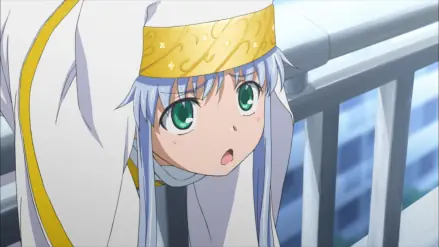
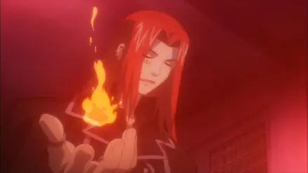
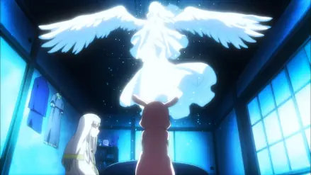
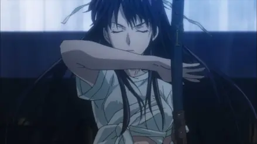
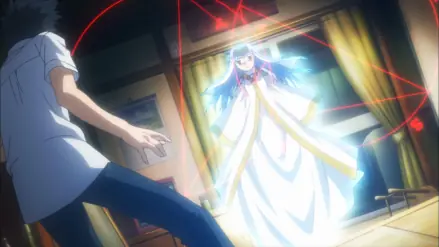
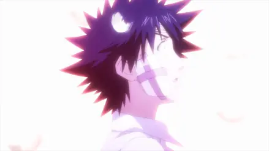
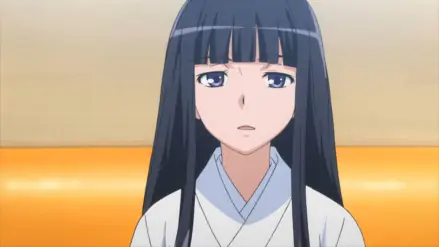
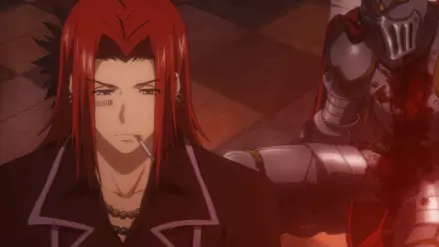
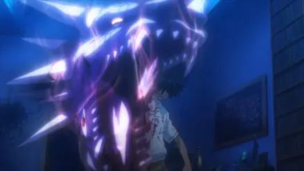
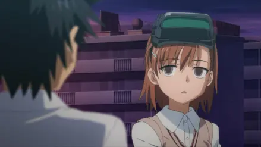
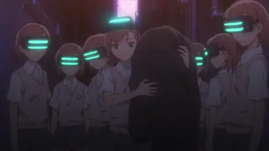
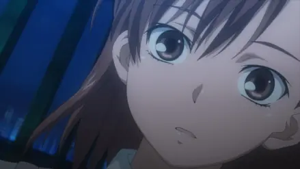
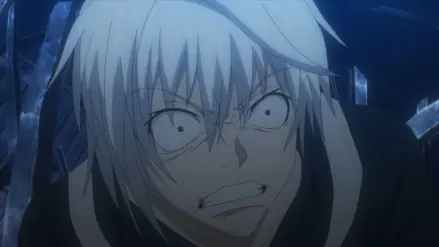
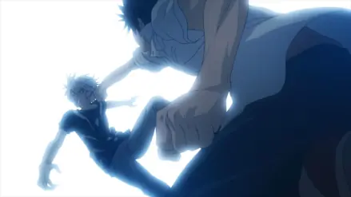
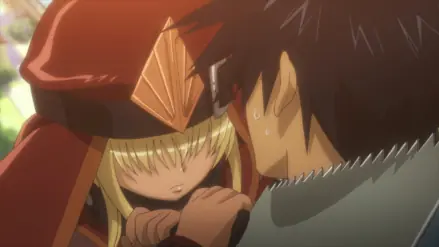